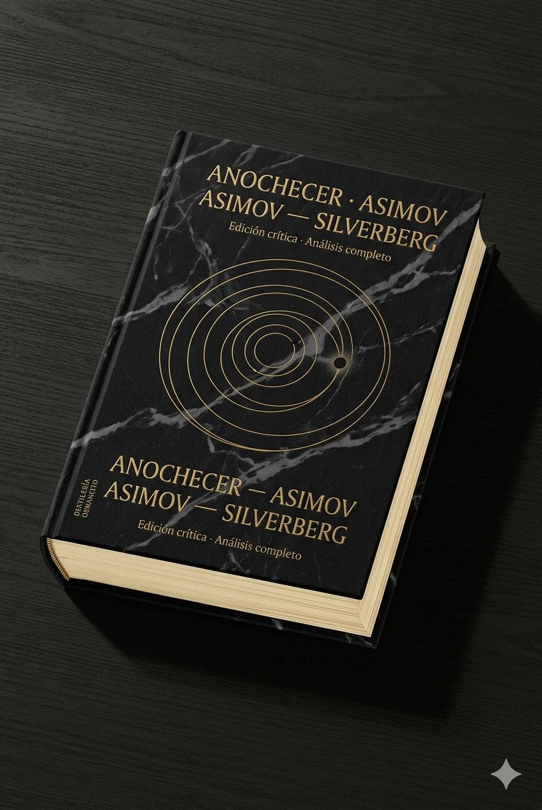
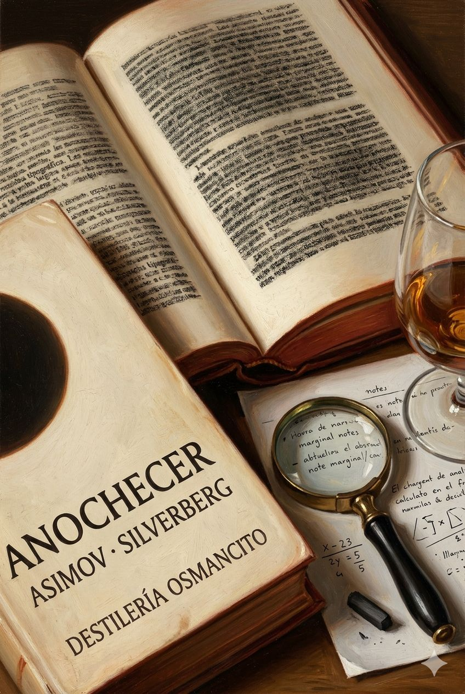

Anochecer

Anochecer llega como un peso gravitacional: novela de ciencia ficción que promete catástrofe cósmica y entrega, en cambio, un estudio de la mente humana ante lo que no puede procesar. La palabra más frecuente del corpus no es “estrellas” ni “oscuridad” sino el nombre de un periodista —Theremon— y eso lo dice todo: el apocalipsis aquí es siempre interior antes de ser exterior. Lo que perdura después de cerrar el libro no es la imagen de miles de soles apagándose, sino algo más inquietante y doméstico: la sospecha de que la cordura es solo un hábito que depende de condiciones que damos por eternas.
Un libro pesado y nervioso llega con el olor de papel de edición de bolsillo y la temperatura de algo que ha esperado mucho tiempo a ser abierto.
Anochecer entra sin pedir permiso. Trae consigo la densidad de una novela que sabe exactamente lo que quiere hacer: poner a la civilización al borde de un eclipse y observar cómo se comporta la razón cuando pierde el suelo bajo los pies. No es un texto silencioso — tiene el pulso acelerado de quien cuenta algo urgente — pero debajo de esa urgencia narrativa hay una pregunta que no se formula jamás de forma directa: ¿qué queda de nosotros cuando desaparece lo que siempre hemos dado por cierto? Nombrar lo que es este corpus no es decir que es una novela de ciencia ficción sobre un eclipse. Es decir que es una disección de la fragilidad constitutiva de la razón humana, construida como aventura.
Título — Anochecer (Nightfall) Autor — Isaac Asimov y Robert Silverberg Año — 1990 (novela); basada en el relato de Asimov de 1941 Género — Novela de ciencia ficción Extensión estimada — ~125.600 palabras · ~502 páginas · 3 partes (Atardecer, Anochecer, Amanecer) · 44 capítulos numerados Idioma original — Inglés Palabra más frecuente con contenido — theremon (690 ocurrencias). El corpus declara ser sobre el fin de la civilización y la aparición de las estrellas; su palabra más frecuente es el nombre de un periodista escéptico. Esa discrepancia expone el verdadero núcleo del libro: no el evento cósmico, sino la conciencia que lo atestigua y lo registra.
En el planeta Kalgash —iluminado permanentemente por seis soles— un grupo de científicos predice con certeza matemática un eclipse total, el primero en dos mil años. La oscuridad que caerá durará pocas horas, pero será suficiente para que la población entera pierda la razón y destruya la civilización: ya ha ocurrido antes, una y otra vez, y los registros arqueológicos lo confirman. La novela sigue a estos personajes durante las horas previas al eclipse, durante su desarrollo y en el caos posterior, mientras una secta religiosa —los Apóstoles de la Llama— aguarda el mismo evento como confirmación profética y como oportunidad de poder.
Theremon 762 — Periodista escéptico de Ciudad de Saro; columna de opinión, escepticismo público, arco de conversión. Beenay 25 — Astrónomo joven; descubridor clave de la predicción del eclipse. Athor 77 — Astrónomo eminente, anciano, autor del modelo matemático central. Siferra 89 — Arqueóloga; ha excavado los ciclos anteriores de destrucción civilizatoria. Sheerin 501 — Psicólogo; experto en el efecto de la oscuridad sobre la mente. Folimun 66 — Líder de los Apóstoles de la Llama; antagonista ambiguo.
En Kalgash no existe la noche: seis soles garantizan iluminación perpetua y la oscuridad es desconocida como experiencia. Los astrónomos de la Universidad de Saro descubren que cada dos mil años se produce un eclipse total coincidente con la posición orbital de la única luna visible, y que ese evento desencadena de forma sistemática la destrucción completa de la civilización. La arqueóloga Siferra confirma independientemente el ciclo al excavar capas de ruinas superpuestas en Beklimot. El corpus sigue a Theremon —periodista que viaja al observatorio a cubrir el evento como escéptico— y su gradual convencimiento de que la amenaza es real. El eclipse llega al final de la segunda parte: la oscuridad súbita, la aparición de miles de estrellas nunca vistas, y la consiguiente locura colectiva que incendia las ciudades. La tercera parte narra el amanecer sobre un mundo en escombros, donde los supervivientes racionales deben decidir si aliarse con los Apóstoles —la única organización con estructura y recursos— para reconstruir. La novela termina con los soles volviendo y el ciclo cerrándose, sin garantía de que esta vez el desenlace será diferente.
Primer contacto: el corpus produce una presión constante y bien calibrada —no angustia, sino anticipación racional creciente— que imita con precisión la experiencia que describe: saber que algo terrible viene y ser incapaz de detenerlo aunque se comprenda perfectamente. El texto es fluido, de lectura rápida, con la artesanía visible de Silverberg dando cuerpo a las ideas de Asimov. Su temperatura emocional no es el horror sino algo más seco y más frío: la demostración clínica. Hay dignidad en esa sequedad. Y también, en sus mejores momentos, una melancolía genuina: la de quien registra que la inteligencia no basta.
Razón vs. instinto ante lo inconceptualizable. El corpus pregunta si la mente racional puede prepararse para una experiencia que excede todo marco conceptual previo. Theremon sabe lo que viene; eso no lo protege. La preparación intelectual y el colapso emocional coexisten sin resolverse.
El ciclo como condena vs. el ciclo como posibilidad de ruptura. La civilización ha sido destruida y reconstruida incontables veces. ¿Es el conocimiento del ciclo suficiente para romperlo esta vez, o el ciclo es el verdadero protagonista y los personajes apenas sus instancias repetidas?
La fe como supervivencia vs. la razón como dignidad. Los Apóstoles sobreviven mejor al caos porque tienen estructura dogmática, disciplina y propósito. Los científicos sobreviven con más integridad pero menos poder. La novela nunca resuelve cuál de los dos tiene razón sobre cómo se reconstruye un mundo.
Eclipse sobre la razón
Un reloj de sol monumental en una plaza desierta, sus múltiples gnómons proyectando sombras en seis direcciones distintas — y una sola de ellas que empieza a desvanecerse, su sombra borrándose lentamente mientras las demás permanecen. Superficie de piedra labrada, desgastada por siglos de uso, con inscripciones matemáticas apenas legibles en el borde. La tensión visual: el orden perfecto del instrumento frente a la anomalía que lo hace inútil. Paleta de ocres cálidos, sienas quemados, un único punto de azul profundo donde debería estar la sombra ausente. En la esquina inferior, etiqueta discreta: DESTILERÍA OSMANCITO · ANOCHECER · ASIMOV-SILVERBERG. Grabado sobre piedra, estilo enciclopedia ilustrada del siglo XIX. Sin fotorrealismo. Relación de aspecto 2:3.La espera documentada
Un cuaderno de campo abierto sobre una mesa de observatorio, sus páginas cubiertas de cálculos y correcciones, manchas de café y anotaciones al margen cada vez más ilegibles a medida que se acercan al final. El cuaderno está abierto en la última página escrita: una fecha, una hora, y una sola oración interrumpida a mitad. Sobre la mesa, un lápiz partido. La ventana fuera del plano insinuada solo por la calidad de la luz que entra — una luz que no debería ser tan anaranjada a esa hora. Paleta de cremas, marfiles, un ocre rojizo invasivo que viene del exterior. En la esquina inferior, etiqueta discreta: DESTILERÍA OSMANCITO · ANOCHECER · ASIMOV-SILVERBERG. Acuarela con línea de tinta. Sin fotorrealismo. Relación de aspecto 2:3.El ciclo que no recuerda
Una estratigrafía arqueológica como corte vertical de tierra: capas de ceniza y reconstrucción superpuestas, perfectamente simétricas, repetidas siete veces de arriba a abajo. Cada capa tiene exactamente el mismo grosor, exactamente la misma composición de restos. En la capa más reciente, en la superficie, pequeñas figuras humanas irreconocibles realizan actividades cotidianas sin advertir el patrón debajo de sus pies. Sin horizonte. Sin cielo. Solo el corte y la repetición. Paleta de tierras: siena, umbra tostada, negro de humo, y un blanco casi luminoso en las capas de ceniza. En la esquina inferior, etiqueta discreta: DESTILERÍA OSMANCITO · ANOCHECER · ASIMOV-SILVERBERG. Gouache con textura de pastel seco. Sin fotorrealismo. Relación de aspecto 2:3.Umbral del conocimiento
El libro como objeto cerrado: volumen de tapa dura con cubierta de tela negra con vetas grises, como piedra pulida. En posición central y dominante, grabado en relieve dorado mate: ANOCHECER · ASIMOV — SILVERBERG. Debajo, en tipografía más pequeña pero igualmente grabada: Edición crítica · Análisis completo. El elemento visual de cubierta: un diagrama orbital preciso — líneas concéntricas y un punto oscuro en posición de tránsito exacto — que no ilustra el eclipse sino lo predice con la frialdad de una ecuación. Canto de las páginas visible: papel cremoso, levemente amarillento. La superficie descansa sobre una mesa de madera oscura con luz lateral que crea sombra larga. Paleta: negro profundo, oro mate, crema. DESTILERÍA OSMANCITO como colofón en lomo, tipografía pequeña vertical. Ilustración editorial de alta factura. Sin fotorrealismo. Relación de aspecto 2:3.

Anochecer es un continente narrativo casi sin tierra firme visible: todo argumento, teoría y ciencia ocurren dentro de escenas que tienen personajes, movimiento y consecuencia. El hallazgo más sorprendente del análisis es que la novela no narra el eclipse como su clímax central —lo narra como una pausa—: lo que ocurre verdaderamente son las docenas de decisiones individuales tomadas bajo presión, y el mundo que esas decisiones construyen en el caos posterior. Theremon no es el protagonista porque esté más cerca de las Estrellas sino porque es el último que capitula: su rendición final es la medida de todo lo que el libro ha demostrado.
[Caps. 1–2] — Sheerin entra al Túnel del Misterio
Qué ocurre — Sheerin, psicólogo convocado como consultor en Jonglor, decide cruzar él mismo el Túnel del Misterio para entender el trauma que estudia. Resiste quince minutos de oscuridad total, sale temblando y declara que el Túnel debe cerrarse definitivamente.
El giro — El hombre que teorizaba sobre el miedo a la oscuridad descubre que ninguna teoría lo protege: su comprensión intelectual del fenómeno no impide que casi se derrumbe dentro.
Intensidad — 4
[Cap. 2] — La tormenta de arena descubre la Colina de Thombo
Qué ocurre — Una tormenta de arena arrasa el yacimiento de Siferra en Beklimot. Cuando pasa, el viento ha abierto la Colina de Thombo y expuesto estratos de ciudades superpuestas, cada una separada de la anterior por una capa de cenizas. Siferra identifica el patrón.
El giro — Lo que parecía una catástrofe para la excavación resulta ser el mayor hallazgo arqueológico de la historia de Kalgash.
Intensidad — 3
[Cap. 4] — Beenay recibe confirmación del fallo orbital
Qué ocurre — Beenay pide a dos estudiantes (Faro y Yimot) que comprueben sus cálculos de forma independiente. Cuando les muestra los resultados, la desviación en la órbita de Kalgash se confirma: la Ley de la Gravitación Universal parece fallar. Beenay sale corriendo, llama a Theremon, casi se cae al llegar.
El giro — Los estudiantes llegan exactamente a la misma conclusión que Beenay, lo que elimina la última excusa para no creerla.
Intensidad — 4
[Caps. 7–8] — Beenay bebe por primera vez
Qué ocurre — Beenay, que nunca bebe, se reúne con Theremon en el Club de los Seis Soles y engulla tres copas en una hora intentando decirle que ha encontrado un error en la física del universo. En la tercera copa se cae de bruces al suelo.
El giro — No hay giro: el evento funciona como un barómetro emocional. Lo notable es que es el único momento de humor físico genuino del libro, y ocurre justo cuando la información que porta Beenay es más grave.
Intensidad — 3
[Cap. 9] — Beenay confiesa el fallo a Athor
Qué ocurre — Beenay entra al despacho de Athor con los cálculos que contradicen su teoría de la gravitación. Athor no se derrumba: escucha, piensa, y propone que quizás haya un cuerpo celeste desconocido, no que la teoría esté equivocada. Beenay se echa a reír histéricamente al reconocer la misma idea que él había descartado como absurda cuando Theremon la sugirió.
El giro — El maestro y el periodista ignorante llegan independientemente a la misma hipótesis del factor desconocido; Beenay, el científico de en medio, la había descartado.
Intensidad — 4
[Cap. 10] — Theremon entrevista a Folimun
Qué ocurre — Theremon va al cuartel general de los Apóstoles esperando entrevistar a Mondior. Le recibe Folimun, que resulta ser inteligente, calmado, casi racional. Le regala el Libro de las Revelaciones y cierra la puerta en su cara con elegancia.
El giro — Theremon sale de allí sabiendo menos que cuando entró, pero inquieto por primera vez ante la posibilidad de que los Apóstoles no sean completamente absurdos.
Intensidad — 3
[Caps. 14–16] — Athor descubre Kalgash Dos; Beenay y Faro calculan el eclipse
Qué ocurre — Athor, tras días sin dormir, completa el Postulado Ocho: hay un satélite invisible orbitando Kalgash que explica las perturbaciones orbitales. Mientras tanto, Beenay y Faro calculan independientemente que ese satélite puede eclipsar a Dovim exactamente cuando Dovim esté solo en el cielo, con una periodicidad de 2.049 años. La fecha coincide exactamente con la predicción de los Apóstoles.
El giro — La ciencia confirma la profecía religiosa. El momento en que Faro dice “Eclipse de Dovim por Kalgash Dos, periodicidad 2.049 años” es el punto más frío del libro.
Intensidad — 5
[Cap. 17] — La reunión de los cuatro: el diagnóstico del fin
Qué ocurre — Athor convoca a Sheerin, Beenay y Siferra. Sheerin diagnostica que la Oscuridad universal producirá una locura masiva. Siferra presenta las capas de fuego de Thombo con sus fechas de radiocarbono: cada incendio ocurrió 2.049 años después del anterior. Athor propone actuar. Es la primera vez que la catástrofe tiene testigos que la comprenden plenamente.
El giro — Siferra había querido mantener sus hallazgos en secreto para no darle credibilidad a los Apóstoles. Pero presentarlos aquí hace exactamente eso: su rigor científico termina siendo la prueba que más asusta.
Intensidad — 5
[Cap. 18] — Theremon llega al observatorio el día del eclipse
Qué ocurre — Theremon aparece en el observatorio el 19 de Theptar pese a estar explícitamente prohibido. Discute con Athor. Siferra interviene y lo acepta como su invitado. Theremon propone que, si todo falla, él puede manejar las relaciones públicas del desastre.
El giro — El hombre que pasó un año burlándose del eclipse llega el día del eclipse, sin poder mantenerse alejado.
Intensidad — 3
[Caps. 22–23] — Faro y Yimot describen su experimento fallido
Qué ocurre — Faro y Yimot llegan al observatorio con retraso, contando que construyeron una cámara oscura con agujeros en el techo para simular las Estrellas. El experimento no produjo ningún efecto perturbador.
El giro — Sheerin, que escucha, comprende de inmediato por qué no funcionó: los agujeros en un techo son arbitrarios. Las Estrellas reales son miles de soles reales apareciendo en un cielo que siempre ha tenido luz. La escala del shock es inconcebible para quien no la haya vivido.
Intensidad — 3
[Cap. 24] — Folimun irrumpe en el observatorio
Qué ocurre — Folimun entra sin invitación al observatorio el día del eclipse y exige que los científicos destruyan su equipo a cambio de protección. Athor se niega. Sheerin propone encerrarlo para que no vea las Estrellas y pierda el alma según su propia teología. Justo entonces Theremon señala la ventana: el eclipse ha comenzado.
El giro — La intrusión de Folimun, que debía ser amenazante, queda absorbida por el inicio del eclipse; el gran antagonista se convierte en un detalle menor cuando el verdadero evento empieza.
Intensidad — 4
[Cap. 27] — El eclipse total y las Estrellas
Qué ocurre — Dovim desaparece completamente. Las Estrellas irrumpen. Folimun colapsa. Theremon lucha con él para proteger las cámaras, pero las Estrellas lo derriban también. Athor, enloquecido, gesticula y grita. La turba entra. El observatorio es destruido.
El giro — Theremon el escéptico, el que creyó que podría resistirlo, también cae. No hay quien sea inmune.
Intensidad — 5
[Cap. 28] — Theremon despierta y reconstruye su nombre
Qué ocurre — Theremon recupera la conciencia en la ladera del monte del observatorio. Tarda varios minutos en recordar su nombre. Luego su número. Luego el nombre del periódico. La reconstrucción de la identidad ocurre como un lento inventario.
El giro — El hombre más cínico y verbal del libro tiene que enseñarse a sí mismo las palabras de nuevo. Su primera acción al recuperar la memoria es llamar a Siferra.
Intensidad — 4
[Cap. 29] — Sheerin emerge del sótano
Qué ocurre — Sheerin sale de su escondite en el sótano del observatorio al día siguiente. Encuentra el vestíbulo lleno de cadáveres y locos. Sale con Yimot. Yimot es apuñalado por una niña de diez años sin ningún motivo aparente. Sheerin sigue solo.
El giro — El escéptico superviviente es Sheerin, el que en teoría tenía más posibilidades de desmoronarse; el valiente Yimot, que miró las Estrellas y sobrevivió, muere por accidente días después.
Intensidad — 4
[Cap. 30] — Siferra mata a Balik
Qué ocurre — Siferra vuelve al laboratorio de arqueología a buscar sus mapas. Balik está allí, desquiciado, la manosea. Ella lo golpea con su palo, tres veces, hasta que deja de moverse.
El giro — El horror no es el acto en sí sino la calma con que Siferra lo realiza y registra. “Hoy he matado a un hombre”, piensa. Y luego: “Balik dejó de preocuparla.”
Intensidad — 5
[Caps. 34–35] — Siferra se une a la Patrulla Contra el Fuego
Qué ocurre — Siferra llega al Refugio de la universidad, que está ahora controlado por Altinol y su Patrulla Contra el Fuego. Altinol la obliga a desnudarse para registrarla. Ella obedece sin protestas visibles. Altinol la recluta.
El giro — La mujer más controlada e intocable del libro se desnuda ante desconocidos sin que le importe. “La modestia era un lujo que sólo podía permitirse la gente civilizada.”
Intensidad — 4
[Caps. 35–37] — Theremon y la pelea por el graben
Qué ocurre — Theremon lleva días en el bosque, hambriento. Consigue un graben muerto. Un grupo de fanáticos anti-fuego lo rodea, le arrebata el animal, le golpea. Siferra aparece con la Patrulla y le rescata.
El giro — Es el momento en que los dos se encuentran, contra toda probabilidad. La primera vez que Siferra usa su autoridad de la Patrulla es para salvar a Theremon, el hombre que pasó un año burlándose de sus investigaciones.
Intensidad — 3
[Caps. 37–38] — Theremon y Siferra se van juntos del Refugio
Qué ocurre — Theremon rechaza unirse a Altinol y pide a Siferra que venga con él a Amgando. Ella acepta. Apagan la luz. Por la mañana se marchan.
El giro — El rechazo al pequeño dictador eficiente y la alianza personal ocurren en la misma escena, sin separación narrativa. Theremon no argumenta ni seduce: simplemente pide.
Intensidad — 3
[Cap. 39 — Gran Autopista del Sur] — Theremon incendia la casa de los ocupantes
Qué ocurre — Unos ocupantes ilegales atrincherados en una casa disparan contra Theremon y Siferra desde el segundo piso. Theremon quema la casa con su pistola de aguja para que salgan. Funcionan. Escapan.
El giro — El periodista que durante un año ridiculizó la idea de la destrucción civilizatoria por el fuego está ahora usando el fuego para sobrevivir, con la misma tranquilidad que cualquier loco del bosque.
Intensidad — 4
[Caps. 41–42] — Captura por los Apóstoles; revelación de Mondior
Qué ocurre — Los Apóstoles capturan a Theremon en el campo. Folimun le recibe y le revela que Mondior no existe: es una síntesis electrónica creada por Bazret y mantenida por Folimun. Theremon pasa ocho horas hablando con él. Luego captura él mismo a Siferra cuando ella intenta infiltrarse en el campamento a rescatarle.
El giro — Theremon no ha sido liberado ni seducido: ha decidido. La revelación de Mondior no le convence de nada por sí misma; lo que le convence es ocho horas de conversación con alguien que parece el más racional de todos.
Intensidad — 4
[Cap. 44] — Cuatro soles; la alianza
Qué ocurre — Al amanecer, Siferra sale sola al claro. Theremon espera. Ella regresa. Acepta trabajar con Folimun, con una condición: no llevará el hábito. Theremon dice que lo arreglará.
El giro — El libro termina no con ningún triunfo ni tragedia, sino con un pacto pragmático y un pequeño detalle material —una prenda de ropa— como última línea de dignidad personal.
Intensidad — 3
Continente.
Las narraciones son el territorio principal de Anochecer: prácticamente todo el conocimiento científico, psicológico y arqueológico se entrega a través de escenas con movimiento, tensión y consecuencia. Hay discusiones teóricas extensas, sí, pero ocurren en mesas de bar, despachos bajo presión y callejones de autopistas destruidas, con personajes que sudan, beben de más, se pelean y se caen. El argumento nunca suspende la acción: el argumento es la acción. Las pocas páginas que se acercan al ensayo —el monólogo de Sheerin sobre la claustrofobia, la demostración de Athor sobre Kalgash Dos— están ancladas en escenas con espectadores, interrupciones, consecuencias emocionales inmediatas. No hay tierra árida en este libro.